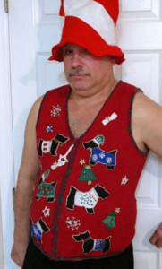
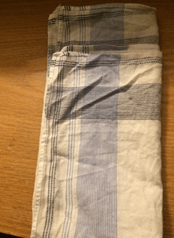
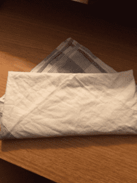
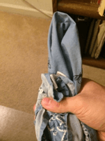

Last week, I did an article on the various types of men’s fashion accessories, and how you can use them to subtly put the metaphorical cherry on top of your wardrobe. I also warned you against some of the bad advice you see on other men’s websites, including “peacocking” and the idea that an accessory can save an otherwise bad foundation. I also promised that I would do another article on some of the types of accessories that I didn’t mention in my first article.
So without further ado, here are three more men’s accessories that you can really use to stand out from the crowd.
Vests
While some may dispute that a vest (or waistcoat, for my friends across the Atlantic) is an “accessory”, they are simply not an essential to a suit as they once were. And besides, I find them to really be something that makes a suit “pop”.
The vest smoothes out rumples in the shirt and gives you extra pockets, plus you can wear them without the jacket (Except for the sort of vest that has a false back, obviously those need a jacket.) The best part is, you can wear them in a wide variety of colors: you can match the waistcoat with the jacket to get the ultra-refined three piece suit look, or alternate colors to really make yourself noticeable. Just make sure that the vest falls properly and covers the belt (but not beyond that).
Combine the vest with a tie chain or pocket watch if you really want to get that “better than you” look—and I always do.
Here we can see two examples of vest usage—the left a semi-casual attire that one might wear on a date, and the latter more formal. Whether the colors match or contrast, the vest is a good look

While vests can indeed be worn as outerwear, this should be avoided
Pocket Square
One of the quintessential accessories worn with any proper jacket, whether it be a suit jacket, blazer, or an odd sport coat. Placed in the breast pocket (which should be on the left side of the jacket unless you’ve made a terrible mistake in buying your clothes), it can add color and/or panache to your overall ensemble.
Typically, a pocket square should be contrasting, like a white pocket square for a black suit, or complimentary, like a warm colored pocket square for a cool colored jacket—the one rule for pocket square coloration is that you NEVER have the pocket square be the same color as the jacket or the tie. The whole point of pocket squares is that it provides a bit of contrast and attention, and it can’t do that if it’s matching something else. It has to compliment, it is garnish.
Also know that the pocket square is NEVER used as a handkerchief, it is part of your outfit. Keep a handkerchief or tissues in your back pocket if you need one.
Folding pocket squares is itself a way to make or break this accessory. As luck would have it, the methods of folding a pocket square are pretty simple, and will be detailed in the following pictures. Bear in mind I have used a neckerchief in these pictures because it is bigger. The actual pocket square is much smaller.
The straight fold is the most basic, it is done by folding the pocket square lengthwise, then width-wise (leaving a little edge), and then lengthwise again.

The point fold is my favorite, and it is as follows:
Lay the pocket square on a flat surface, and bring one corner to another corner, making a triangle. Then fold the left corner to the right, and the right corner over the left corner fold that you just made. And finally, fold the bottom up towards the point, but not covering the point.

The Puff Fold is done by laying the square flat on the table, and pinching the middle while picking it up, allowing the folds to come together naturally. Hold the middle of the wadded fabric as you gather up the bottom of the square.

Boutonniere
Some may balk at this, but I’d recommend it. Just wearing it shows confidence and you can get them for free in the right season, and it’ll certainly make you stand out. It is properly worn on the left side of the breast, near the heart, and keeping it simple and subtle is the key to pulling it off. Remember contrasting colors, complimentary colors, etc.
You push it through the lapel buttonhole on the left side. The stem is held in place with a loop in the jacket (your jacket may not have this), the calyx should be pushed into the button hole which locks it into place. Since most jackets don’t have the boutonniere loops, try pins.
The flower is typically a carnation, white being the most formal. Various flowers are worn for various events, just avoid green carnations since that has been appropriated as a symbol of the gay community.
A carnation, the standard
An unusual boutonniere using various fruits instead of a flower, but it doesn’t look half bad. Try it if you want to create a sort of “humble yeoman” look
Yes, that is a toiletry boutonniere. No, you shouldn’t wear it. You should also know that a baseball cap + a suit = an embodiment of modern failure.
Remember, accessories are not a game changer, if your clothes are shit the accessory won’t work. But if you are already well dressed, the accessory takes from good-yet-ordinary to extraordinary
Read More: How To Choose Fashion Accessories